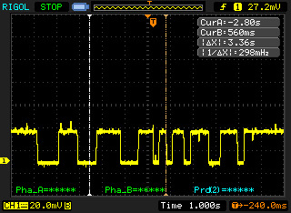
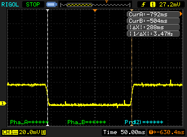
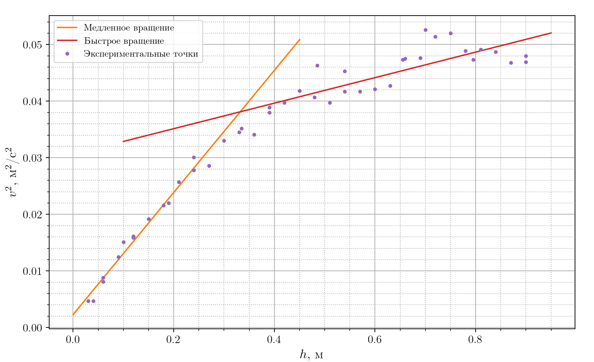
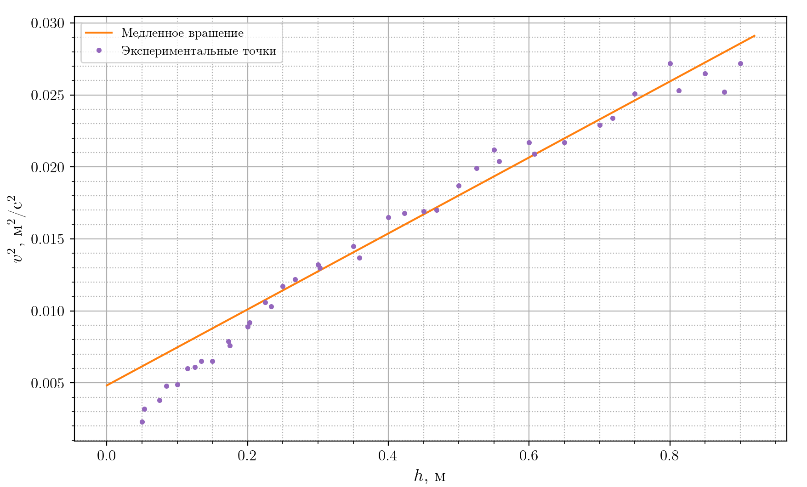
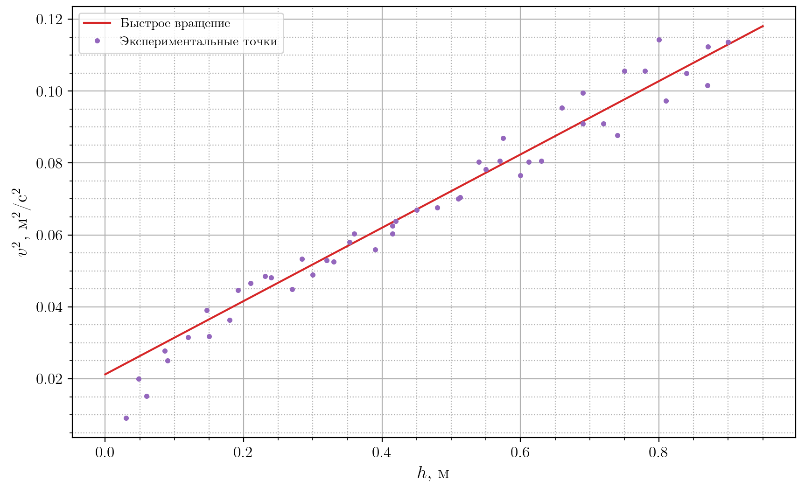

Y26 (2026) — English translation
Starting from the second, the breakdown of the MCH leads to a penalty of 1 point!
We will find the coordinate of the center of mass by placing the MCN on the edge of the table so that the MCN almost turns over. Let's take 2 measurements. In the first case, we smoothly transfer the MCH from a vertical position with a weight from below to a horizontal one, in the second, from a vertical position with a weight on top. This is necessary to average the static friction force.
Note. An alternative way to eliminate friction is to tap or roll the box on the table to bring the weight into equilibrium.
Typical appearance of an oscilloscope signal.
Typical view of the oscilloscope signal (approximate).


Attention! After each change in the position of the photogates, make sure that the anchor does not touch them when moving!
$$d = 3.9~cm$$ $h,~mm$ $\tau_1,~ms$ $\tau_2,~ms$ $\tau_3,~ms$ $\tau,~ms$ $v,~m/s$ $v^2,~m^2/s^2$ 30 560 576 564 567 0.069 0.0047 40 556 574 578 569 0.069 0.0047 60 426 436 438 433 0.090 0.0081 60 420 412 416 416 0.094 0.0088 90 348 358 342 349 0.112 0.0125 100 316 312 324 317 0.123 0.0151 120 310 306 306 307 0.127 0.0161 120 308 312 308 309 0.126 0.0159 150 278 288 278 281 0.139 0.0192 180 264 264 268 265 0.147 0.0216 190 262 264 262 263 0.148 0.0220 210 242 244 244 243 0.160 0.0257 240 234 234 234 234 0.167 0.0278 240 224 230 220 225 0.174 0.0301 270 226 234 232 231 0.169 0.0286 300 218 212 214 215 0.182 0.0330 330 206 214 210 210 0.186 0.0345 335 208 208 208 208 0.188 0.0352 360 214 208 212 211 0.185 0.0341 390 196 198 199 198 0.197 0.0389 390 198 200 202 200 0.195 0.0380 420 197 196 194 196 0.199 0.0397 450 189 193 190 191 0.205 0.0418 480 194 194 192 193 0.202 0.0407 485 182 184 178 181 0.215 0.0463 510 195 196 196 196 0.199 0.0397 540 191 194 188 191 0.204 0.0417 540 176 188 186 183 0.213 0.0453 570 190 192 191 191 0.204 0.0417 600 190 190 190 190 0.205 0.0421 630 187 190 189 189 0.207 0.0427 655 180 180 178 179 0.217 0.0473 660 178 179 180 179 0.218 0.0475 690 178 181 177 179 0.218 0.0476 700 170 170 170 170 0.229 0.0526 720 174 172 170 172 0.227 0.0514 750 172 171 170 171 0.228 0.0520 780 175 178 176 176 0.221 0.0489 795 178 188 172 179 0.217 0.0473 810 175 176 177 176 0.222 0.0491 840 177 175 178 177 0.221 0.0487 870 181 181 179 180 0.216 0.0468 900 177 179 178 178 0.219 0.0480 900 182 178 180 180 0.217 0.0469
$$d = 3.9~cm$$
$$ m_0\ddot{h} = m_0g - T \\ I\dot{\omega} = \alpha TR$$Excluding $T$ and substituting $\dot{h} = \omega R$ we get: $$\ddot{h} = \frac{\alpha m_0 g R^2}{I + \alpha m_0R^2}$$We use следующее equality $\gamma = \frac{d{v^2}}{d{h}} = 2\ddot{h}$: $$\gamma = \frac{2\alpha m_0 g R^2}{I + \alpha m_0R^2}$$Then substituting expression for momentа инерции we get: $$\gamma = \frac{2\alpha m_0 g R^2}{\alpha m_0R^2 + I_B + I_1 + mx^2}$$For медленного сrayая $x = x_0$, for быстрого $x = \frac{L}{2}-\delta$:
Characteristic appearance of the graph: Slow rotation at $v < 0.17~\frac{\mathrm{m}}{\mathrm{s}}$ Fast rotation at $v>0.20~\frac{\mathrm{m}}{\mathrm{s}}$ In the section of the dependence where fast rotation is observed, oscillations with a characteristic period along $h$ approximately $15~cm$ are visible. Note. Oscillations at the end of the graph arise from vibrations of the table, the characteristic period of which coincides with the perimeter of the cylindrical stand.
Note. Oscillations at the end of the graph arise from vibrations of the table, the characteristic period of which coincides with the perimeter of the cylindrical stand.

$$d = 4.5~cm$$ $h,~mm$ $\tau_1,~ms$ $\tau_2,~ms$ $\tau_3,~ms$ $\tau,~ms$ $v,~m/s$ $v^2,~m^2/s^2$ 31 764 828 808 800 0.056 0.0032 50 936 944 944 941 0.048 0.0023 62 664 632 656 651 0.069 0.0048 75 736 720 744 733 0.061 0.0038 92 584 580 584 583 0.077 0.0060 100 636 648 648 644 0.070 0.0049 112 548 564 564 559 0.081 0.0065 125 584 572 568 575 0.078 0.0061 150 568 560 552 560 0.080 0.0065 150 516 492 512 507 0.089 0.0079 175 528 508 512 516 0.087 0.0076 180 472 472 460 468 0.096 0.0092 200 468 484 480 477 0.094 0.0089 211 436 448 448 444 0.101 0.0103 225 448 432 432 437 0.103 0.0106 245 412 404 408 408 0.110 0.0122 250 408 424 416 416 0.108 0.0117 280 390 400 392 394 0.114 0.0130 300 388 396 392 392 0.115 0.0132 336 380 380 392 384 0.117 0.0137 350 368 384 368 373 0.121 0.0145 400 348 352 352 351 0.128 0.0165 400 354 340 348 347 0.130 0.0168 446 348 334 352 345 0.131 0.0170 450 336 352 352 347 0.130 0.0169 500 332 328 328 329 0.137 0.0187 503 308 330 320 319 0.141 0.0199 535 320 316 310 315 0.143 0.0204 550 312 304 312 309 0.145 0.0212 585 314 312 308 311 0.145 0.0209 600 304 308 304 305 0.147 0.0217 650 310 306 300 305 0.147 0.0217 696 294 300 288 294 0.153 0.0234 700 298 298 296 297 0.151 0.0229 750 280 286 286 284 0.158 0.0251 790 280 286 282 283 0.159 0.0253 800 276 274 268 273 0.165 0.0272 850 280 276 274 277 0.163 0.0265 855 288 284 278 283 0.159 0.0252 900 276 270 272 273 0.165 0.0272
$$d = 4.5~cm$$
The entire dependence is in the range of slow rotation.

$$d = 3.9~cm$$ $h,~mm$ $\tau_1,~ms$ $\tau_2,~ms$ $\tau_3,~ms$ $\tau,~ms$ $v,~m/s$ $v^2,~m^2/s^2$ 30 406 404 416 409 0.095 0.0091 48 272 280 276 276 0.141 0.0200 60 312 318 320 317 0.123 0.0152 86 234 230 238 234 0.167 0.0278 90 242 246 250 246 0.159 0.0251 120 220 218 221 220 0.178 0.0315 147 198 194 200 197 0.198 0.0391 150 222 214 220 219 0.178 0.0318 180 204 203 206 204 0.191 0.0364 192 182 184 188 185 0.211 0.0446 210 182 180 180 181 0.216 0.0466 231 177 174 180 177 0.220 0.0485 240 179 178 176 178 0.220 0.0482 270 184 182 186 184 0.212 0.0449 284 174 168 165 169 0.231 0.0533 300 177 177 175 176 0.221 0.0489 320 170 169 169 169 0.230 0.0530 330 170 166 174 170 0.229 0.0526 353 161 159 166 162 0.241 0.0580 360 159 158 159 159 0.246 0.0604 390 165 164 166 165 0.236 0.0559 415 158 159 159 159 0.246 0.0604 415 156 162 150 156 0.250 0.0625 420 154 155 154 154 0.253 0.0639 450 153 150 149 151 0.259 0.0670 480 148 154 148 150 0.260 0.0676 510 150 146 146 147 0.265 0.0701 513 149 146 146 147 0.265 0.0704 540 136 140 137 138 0.283 0.0803 550 133 142 143 139 0.280 0.0783 570 140 138 134 137 0.284 0.0806 575 138 132 127 132 0.295 0.0869 600 139 142 142 141 0.277 0.0765 612 135 141 137 138 0.283 0.0803 630 136 138 138 137 0.284 0.0806 660 126 126 127 126 0.309 0.0953 690 134 124 130 129 0.302 0.0909 690 127 122 122 124 0.315 0.0995 720 130 131 127 129 0.302 0.0909 740 132 132 131 132 0.296 0.0877 750 119 120 121 120 0.325 0.1056 780 123 119 118 120 0.325 0.1056 800 117 114 115 115 0.338 0.1143 810 121 128 126 125 0.312 0.0973 840 121 120 120 120 0.324 0.1050 870 122 122 123 122 0.319 0.1016 871 116 116 117 116 0.335 0.1124 900 122 110 115 116 0.337 0.1137
$$d = 3.9~cm$$
Almost the entire dependence is in the range of fast rotation.

$$x_0 = \frac{(mx_0)}{m}$$Перепишем уравнения в следующем виде: \begin{cases} I_B +I_1 + m(\frac{L}{2}-\delta)^2 + \alpha m_{02}R^2 = 2\alpha R^2g\frac{ m_{02}}{\gamma_2} \\ I_B +I_1 + mx_0^2 + \alpha m_{01}R^2 = 2\alpha R^2g\frac{ m_{01}}{\gamma_1} \end{cases} Subtracting данные уравнения: $$m\left(\left(\frac{L}{2} - \delta\right)^2 - \frac{(mx_0)^2}{m^2}\right) = 2\alpha R^2 \left(\frac{m_{02}g}{\gamma_2} - \frac{m_{01}g}{\gamma_1} +\frac{m_{01} - m_{02}}2\right)$$Solving the quadratic equation we get the answer:
Let's consider the forces acting on the weight from the springs (axis $x$ is directed towards $k_1$): $$F = k_1\left(\frac{L}{2}-x\right) - k_2\left(\frac{L}{2}+x\right)$$$$F = \frac{L}{2}\left(k_1-k_2\right) - x(k_1+k_2)$$It can be seen that for/at смещении на грузик действует force $\Delta F = (k_1 + k_2)\Delta x = k\Delta x$
Attention! Take measurements with the greatest possible accuracy, because... this is important to obtain an accurate result.
Let's measure the time of 150 oscillations 2 times for each position: $t_{11} = 189.08~\mathrm{s}$ $t_{12} = 189.35~\mathrm{s}$ $t_{21} = 182.96~\mathrm{s}$ $t_{22} = 183.10~\mathrm{s}$ Then the periods:
$t_{11} = 189.08~\mathrm{s}$ $t_{12} = 189.35~\mathrm{s}$ $t_{21} = 182.96~\mathrm{s}$ $t_{22} = 183.10~\mathrm{s}$
Then the periods are:
$$T_2 = (1.220 \pm 0.001)~\mathrm{s}$$
Let us write down the moments of forces acting on the pendulum: $$I\ddot{\varphi} = -\varphi\left(Mg\left(\frac{L}{2}+D\right)+mg\left(\frac{L}{2}+D\pm x_0+\Delta x\right)\right)$$The sign is chosen in accordance with the orientation of the MCH. Then the periods of oscillation:
Let's rewrite the equations in the following form: \begin{cases} I_0+I_1+m\left(\frac{L}{2}+D+x_0+\Delta x\right)^2 = \frac{T_1^2}{4\pi^2} \left(Mg\left(\frac{L}{2}+D\right)+mg\left(\frac{L}{2}+D+ x_0+\Delta x\right)\right) \\ I_0+I_1+m\left(\frac{L}{2}+D-x_0+\Delta x\right)^2 = \frac{T_2^2}{4\pi^2} \left(Mg\left(\frac{L}{2}+D\right)+mg\left(\frac{L}{2}+D- x_0+\Delta x\right)\right) \end{cases} Subtract these equations and express $\Delta x$:
From C1: $$F(x=x_0)= 0 = \frac{L}{2}(2k_1 - k) - kx_0$$ Expressing $k_1$: $$k_1 = k\left(\frac{1}{2}+\frac{x_0}{L}\right) = k\left(\frac{1}{2}+\frac{x_0}{L}\right) $$ $$k_2 = k\left(\dfrac{1}{2} - \dfrac{x_0}{L}\right)$$
$$F(x=x_0)= 0 = \frac{L}{2}(2k_1 - k) - kx_0$$
Expressing $k_1$:
$$k_1 = k\left(\frac{1}{2}+\frac{x_0}{L}\right) = k\left(\frac{1}{2}+\frac{x_0}{L}\right) $$
$$k_2 = k\left(\dfrac{1}{2} - \dfrac{x_0}{L}\right)$$
$$k_1 = (7 \pm 4)~\frac{\mathrm{N}}{\mathrm{m}}$$